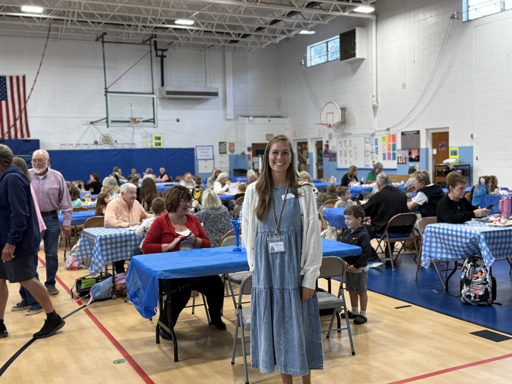
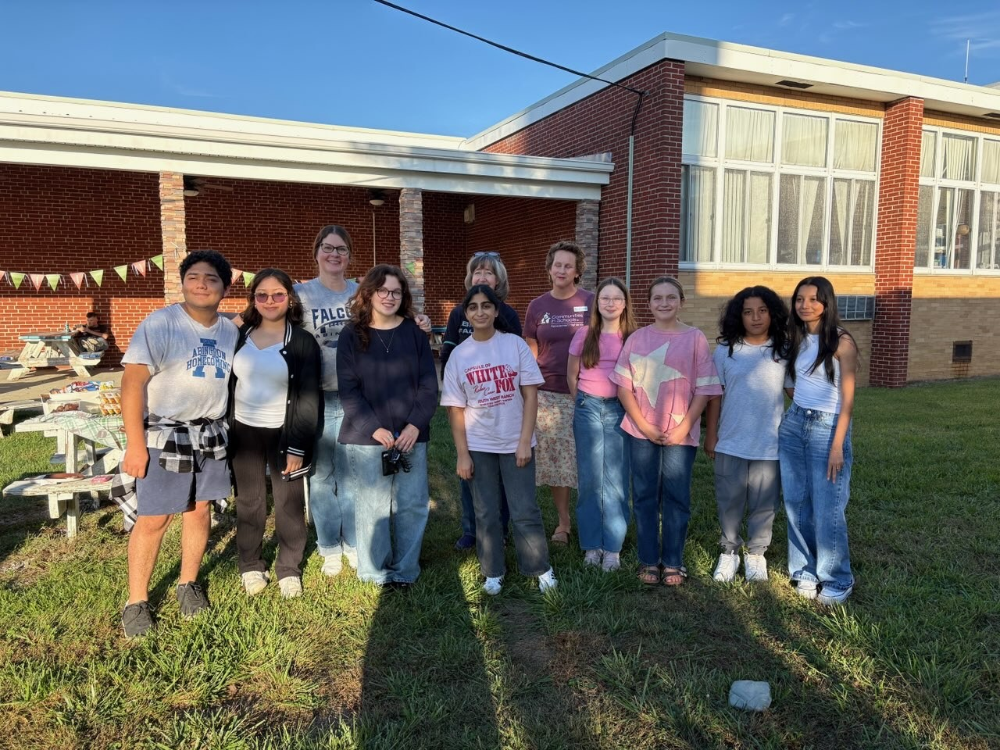

- Branch:
- #5 Engagement and Motivation
- Treatment:
- School-Level
Washington County
Cohort 1 📍 Region 7
Across 15 schools, Washington County centered its Community Schools work on attendance to drive improvements in student engagement and family involvement. The division built a visible attendance culture through branded campaigns at every building, from "Step into September" shoe drawings to "Bases Loaded" classroom competitions to "World Changer of the Week" recognition. The approach is already showing results: six schools exceeded their 94% attendance target in the first quarter, and the division averaged 95% across all 15 schools.
That attendance culture is reinforced through student-led service projects, peer leadership programs, multigenerational family events, and programming for multilingual families that bring students, families, and community partners together in every building. When Hurricane Helene hit, Damascus Middle became a community hub for families during and after the storm, providing a proof point for the very connections the division had been building every day in every school.
Coordinator's Note
📝
Washington County exemplifies VCSI Stage 3.1: Align to the Four Branches of Student Support. Washington County has formed partnerships that bring families and the community into the schools in authentic and meaningful ways, turning their schools into neighborhood hubs of support.
Explore the VCSI Toolkit and learn more »
Damascus Middle
Single Photo Block

The Bike Build Bash brought 15 students and 10 parents together to build and prepare bicycles donated by the Outride Foundation, working alongside local bike mechanics from Blue Blaze Bike Shop and Virginia Creeper Trail Bike Shop. Damascus Middle also took 64 seventh graders on a field trip along the Appalachian Trail, where students learned to pack a backpack, build a fire, and maintain trails alongside community presenters.
Wallace Middle
Voices From the Community
"While they were searching for stable housing, I was able to assist by covering the rental application fee, allowing their application to be processed without delay. With this support, the father was soon able to secure both employment and approval for a new housing unit. I was able to secure a proper bed for the student and covered the cost. Our school principal kindly stepped in to help with transportation and personally delivered the bed to the family's home. On top of that, a generous teacher who wanted to contribute asked for the bed size and then allowed the student to choose their own new bedding, which was also delivered. This small chain of acts—sparked by community support and staff collaboration—has made a meaningful difference. This student now has a home and a bed of her own—a true foundation for rest, growth, and success."
— Skye Waller, Communities in Schools – Appalachian Highlands Student Support Coordinator
Patrick Henry High
Voices From the Community
"At Patrick Henry High School, a simple idea—bringing students together during breakfast and lunch twice a week—has created real change. …. In the first nine weeks, new friendships formed, and the group became a highlight of the week for many. Parents have noticed big improvements, too. Several shared that their children are more excited to come to school, have more confidence, and are making new friends. What started as a small effort to bring students together has grown into something special—a daily reminder that everyone belongs and friendship can start with just a seat at the table."
— Erin Johnson, Communities in Schools – Appalachian Highlands Student Support Coordinator
Valley Institute Elementary
Voices From the Community
"One of our first initiatives, Bulldogs Against Bullying, encouraged students to take a stand for kindness and respect. After signing a schoolwide pledge, students traced and cut out their hands to symbolize their commitment to creating a safe, inclusive school environment. The Bulldog Buddies program has quickly become a source of pride and inspiration—developing leadership skills in our upper-grade students while spreading positivity and kindness throughout our entire school community."
— Kirby Hardin, Communities in Schools – Appalachian Highlands Student Support Coordinator
Single Photo Block

Valley Institute's Grandparents' Breakfast drew 264 attendees in September, filling the school gym with grandparents and students eating together. The Bulldog Buddies peer mentoring program runs monthly kindness and character-building initiatives across the school, and 240 students signed the Bulldogs Against Bullying pledge. A "Top Dog Hero" quarterly recognition extends the school's culture work beyond single events.
Watauga Elementary
Voices From the Community
"Through their collective effort, Paws for a Cause organized and assembled 221 'Bags of Sunshine'—each filled with snacks, coloring books, fuzzy socks, stuffed animals, and other small items designed to brighten the day of children who are sick and in local hospitals. These bags were delivered to Niswonger's Children's Hospital to encourage children who are patients, as well as siblings who may be spending long hours away from home. What made this project so special was that it was completely student-led. From brainstorming ideas to delivering the information to their homeroom and buddy homeroom to sorting donations and packing each bag with care, students took ownership every step of the way. The Paws for a Cause club continues to remind us that when students lead with empathy and purpose, they not only change their school—they impact the world beyond it."
— Maegan Brown, Communities in Schools – Appalachian Highlands Student Support Coordinator
Abingdon High School
4-Photo Block
The Family Resource Center (FRC) at Abingdon High held its inaugural kickoff in September with more than 25 community partners. The FRC began as a resource for families of students with disabilities and is intended to expand division-wide. The event took place inside Blue Ridge Auto Group's dealership showroom, a private business space donated for the evening. Partner tables from across the community lined the showroom floor alongside the vehicles.
Single Photo Block

The ESL Tailgate was a joint event between Abingdon High and E.B. Stanley Middle. The cross-school model recognizes that multilingual families benefit from programming that spans grade levels and is one of several events for English language learner families across the division.